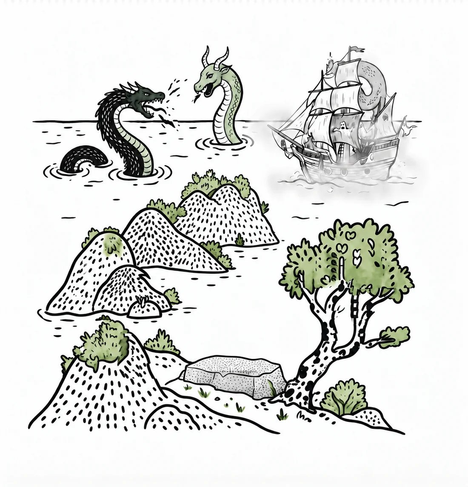
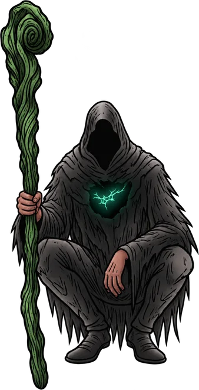
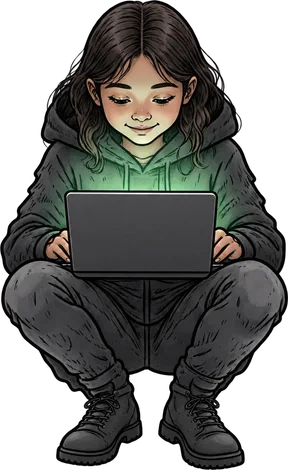
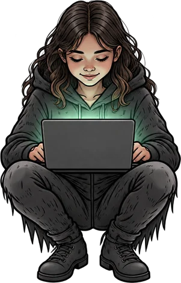
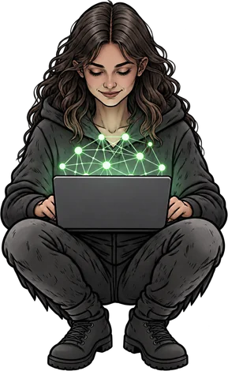

Somos el espacio donde se aprende, se debate y se construye con Tecnología desde el sur de Chile. Uniendo a las personas y nuestro territorio a través de diversas actividades.
Local · United · Minds · AI





Entender la teoría y las herramientas a fondo desde nuestro territorio.
Unidos en todas las capas: academia, industria y territorio.
Filosofía, ética nos mueve al igual que lo técnico.
Inteligencia Artificial como medio para resolver problemas.
No teorizamos desde lejos. Diseñamos espacios de encuentro y desarrollo adaptados a las dinámicas del sur de Chile.
Capacitación aplicada para que creadores, profesionales y técnicos incorporen IA en su flujo diario de trabajo, sin tecnicismos innecesarios.
Debates y mesas redondas abiertas a la comunidad para abordar de forma crítica el impacto ético y social del desarrollo tecnológico.
Maratones de diseño y programación colaborativa orientadas a resolver desafíos específicos de las comunidades locales en tiempo récord.
Un espacio activo para compartir recursos, resolver dudas y encontrar colaboradores en proyectos independientes fuera de la gran urbe.
Nuestro canal auditivo. Conversamos con creadores, ingenieros y científicos que están repensando los límites tecnológicos desde Chile.
Acompañamos a organizaciones territoriales en la transición hacia la automatización lógica, con un enfoque sostenible y localizado.
Marzo – junio 2026
Ing. Civil en Informática ULagos
(César y Víctor)
Junio 2026
(César y Víctor)
Julio 2026
Descubre cómo introducir la IA en tu negocio y qué procesos pueden ayudarte a automatizar.
(Álvaro y Víctor)
Agosto 2026
Nos juntamos a repensar la tecnología en el territorio.
Septiembre 2026
Una comunidad que busca ser un referente en el sur de Chile, en el uso responsable de tecnología e IAG.
Octubre 2026
Álvaro, César y Víctor, realizando charlas y talleres a la comunidad respecto a IAG aplicada en áreas de productividad y educación.
Diciembre 2026
Lanzamiento oficial de la comunidad LUMA y participación en la DemoDay.
Tres mentes inquietas que decidieron dejar de esperar que las cosas pasen en Santiago para construirlas directamente desde el sur.


Creemos en una red descentralizada de conocimiento tecnológico. Únete hoy a nuestro canales y sé parte de la conversación activa y los eventos mensuales en el territorio.